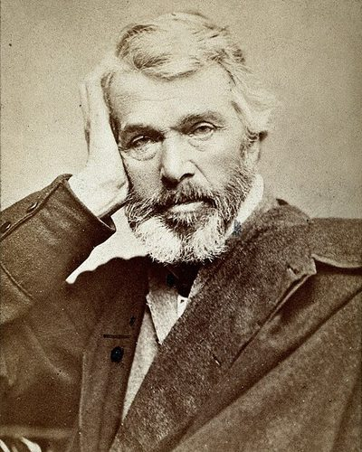

Ideologies / Reactionary
What is Carlylean Hero Worship?
Carlylean Hero Worship is a political ideology in the Reactionary family. Carlyle holds that history is made by great men, whether prophets, poets or kings, and that reverence for them is the bond of every society. The task of politics is to find the ablest man and obey him. In the Latter-Day Pamphlets he turns this against his own age: counting votes cannot discover who is fit to rule, free market economics abandons the poor, and the idle should be enrolled in labour regiments under command. He saw democracy as the absence of real government.
History is the biography of great men, and the ablest should rule.
Defined from: Thomas Carlyle, On Heroes, Hero-Worship, and the Heroic in History (1841) and Latter-Day Pamphlets (1850)
See how close you are to Carlylean Hero Worship Dare a friend to answer as one

.jpg){kind=link}
Where Carlylean Hero Worship stands on 13 axes
Each axis runs from 0 to 100. A score of 50 is the middle. On a classic compass it sits in the Authoritarian Right quadrant.
| Axis | Position | Score | In words |
|---|---|---|---|
| EconomyMarket to Planned | 60 | Leans Planned | |
| OwnershipPrivate to Collective | 30 | Strongly Private | |
| RightsLiberty to Security | 80 | Strongly Security | |
| GovernmentDemocracy to Autocracy | 95 | Very strongly Autocracy | |
| StructureDecentralised to Centralised | 80 | Strongly Centralised | |
| NationInternationalist to Nationalist | 60 | Leans Nationalist | |
| ImmigrationMulticulturalist to Assimilationist | 70 | Strongly Assimilationist | |
| ValuesProgressive to Traditional | 75 | Strongly Traditional | |
| TechnologyAccelerationist to Precautionary | 45 | Balanced | |
| EnvironmentIndustrialist to Environmentalist | 40 | Leans Industrialist | |
| ReligionSecular to Religious | 70 | Strongly Religious | |
| MilitaryPacifist to Militarist | 75 | Strongly Militarist | |
| TradeFree Trade to Protectionist | 55 | Balanced |
Ideologies closest to Carlylean Hero Worship
- Kautilyan Statecraft85% alike
- Divine Right Absolutism85% alike
- Brazilian Integralism84% alike
- Pan Slavism84% alike
- Rexism83% alike
Its opposite on this map is Anarcha Feminism, at 27%.
Parties near Carlylean Hero Worship
- United RussiaRussia. People's Programme (2021)82% alike
- National Resistance MovementUganda. Protecting the Gains (2025)81% alike
- Justicialist PartyArgentina. The Twenty Truths of Peronism (1950)77% alike
- National Fascist PartyItaly. The Doctrine of Fascism (1932)77% alike
Common questions
What is Carlylean Hero Worship?
Carlylean Hero Worship is a political ideology in the Reactionary family. Carlyle holds that history is made by great men, whether prophets, poets or kings, and that reverence for them is the bond of every society. The task of politics is to find the ablest man and obey him. In the Latter-Day Pamphlets he turns this against his own age: counting votes cannot discover who is fit to rule, free market economics abandons the poor, and the idle should be enrolled in labour regiments under command. He saw democracy as the absence of real government.
What does Carlylean Hero Worship believe?
In one line: History is the biography of great men, and the ablest should rule. Its strongest positions are Autocracy, Security, Centralised. Carlyle holds that history is made by great men, whether prophets, poets or kings, and that reverence for them is the bond of every society. The task of politics is to find the ablest man and obey him. In the Latter-Day Pamphlets he turns this against his own age: counting votes cannot discover who is fit to rule, free market economics abandons the poor, and the idle should be enrolled in labour regiments under command. He saw democracy as the absence of real government.
Who founded Carlylean Hero Worship?
Carlylean Hero Worship is defined here from On Heroes, Hero-Worship, and the Heroic in History (1841) and Latter-Day Pamphlets (1850) by Thomas Carlyle. The thinker most tied to it is Thomas Carlyle (1795 to 1881).
Is Carlylean Hero Worship left wing or right wing?
On a classic two axis compass Carlylean Hero Worship falls in the Authoritarian Right quadrant, which means the economic centre and the authoritarian side. Left and right hide a lot, though, which is why EthosScales scores it on thirteen separate axes.
How is Carlylean Hero Worship different from Kautilyan Statecraft?
They are close: 85% alike. The biggest gaps are on Religion, where Carlylean Hero Worship scores 70 and Kautilyan Statecraft scores 40, and Ownership, where Carlylean Hero Worship scores 30 and Kautilyan Statecraft scores 50. On each axis, 0 is one end and 100 is the other.
Think this is wrong? Suggest a correction. The scores are editorial estimates.